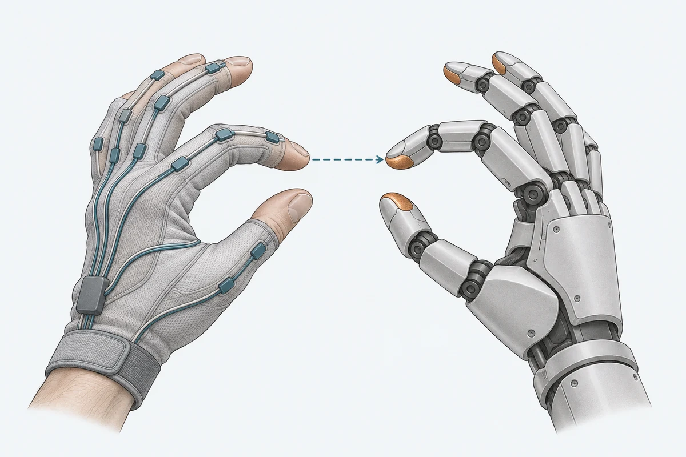

灵巧智能 DexHand021 的数据手套遥操作与触觉采集 Glove teleoperation and tactile data collection for DexRobot’s DexHand021
开发 DexCap 数据手套到灵巧智能 DexHand021 的遥操作系统，完成指尖位姿重定向、关节控制接口、真机回放及触觉数据记录。Developed a DexCap-to-DexRobot DexHand021 teleoperation system with fingertip pose retargeting, joint control, hardware replay and tactile recording.

一次闭指动作，三个可对照的记录Three records of the same closing motion
手套给出的目标What the glove specifies
从一段闭指记录开始，先把手套指尖位姿转换至机械手坐标系，再按指长差异调整运动尺度。这样得到的是机械手指尖应到达的位置和朝向，能够直接与求解器预览中的姿态比较。Start with a recorded finger closure. The glove poses are transformed into the robot hand’s frame and the motion is scaled for its finger lengths. The resulting fingertip positions and orientations provide explicit targets for comparison with the solver preview.
求解器生成的手姿What the solver can reproduce
预览由求得的关节角生成。若闭合方向在预览里已经偏离手套目标，就可以先检查坐标对齐、尺度或指腹朝向约束。这一环节可以仅依靠记录完成，且不受重新做一遍手势造成的差异干扰。The preview reconstructs a hand pose from the solved joint angles. If the closing direction is already wrong there, coordinate alignment, scale and pad-orientation constraints can be examined from the recording without variation from a second performance of the gesture.
真机上的接触时刻When contact occurs on hardware
在真机上回放同一关节序列，并将闭合指令与指尖触觉并排观察。关节目标描述的是期望手姿，触觉变化则提供指尖实际碰到物体的证据，两者结合才便于解释抓取过程。Replay the same joint sequence on the physical hand and inspect closure commands alongside fingertip tactile readings. The commands specify the intended pose. The tactile response supplies evidence of contact with the object during execution.
指尖位姿约束下的运动重定向Motion retargeting with fingertip pose constraints
解析手套测量数据，完成坐标对齐与运动尺度映射。结合 DexHand021 正运动学，在指尖位置与指腹朝向约束下求解目标关节角，适配人手和机械手的指长差异及关节活动范围。Glove measurements are decoded, transformed into the robot hand frame and rescaled to account for differences in finger length. An inverse-kinematics solver uses the DexHand021 forward model to satisfy fingertip-position and fingerpad-orientation constraints within the hand’s joint limits.
控制接口与硬件回放Hardware control and trajectory replay
集成 DexHand021 控制接口，加入关节位置限制、速度限制和指令超时检测。实时逆运动学预览、离线轨迹转换与真机回放共用记录数据，用于核对运动映射与实际执行结果。The DexHand021 control interface enforces joint-position and velocity limits and detects command timeouts. Live inverse-kinematics previews, offline trajectory conversion and hardware replay use the same recorded data to compare retargeted motion with physical execution.
手套输入、关节指令与触觉记录Glove, joint-command and tactile recording
关联保存手套原始测量、指尖位姿、关节指令及指尖触觉反馈，构建遥操作记录与回放工具。记录覆盖手指闭合、初次接触与抓取保持阶段，支持运动指令与接触状态的对照分析。Recording and replay tools associate raw glove measurements, fingertip poses, joint commands and tactile feedback. Records span finger closure, initial contact and grasp holding, supporting comparisons between commanded motion and observed contact states.